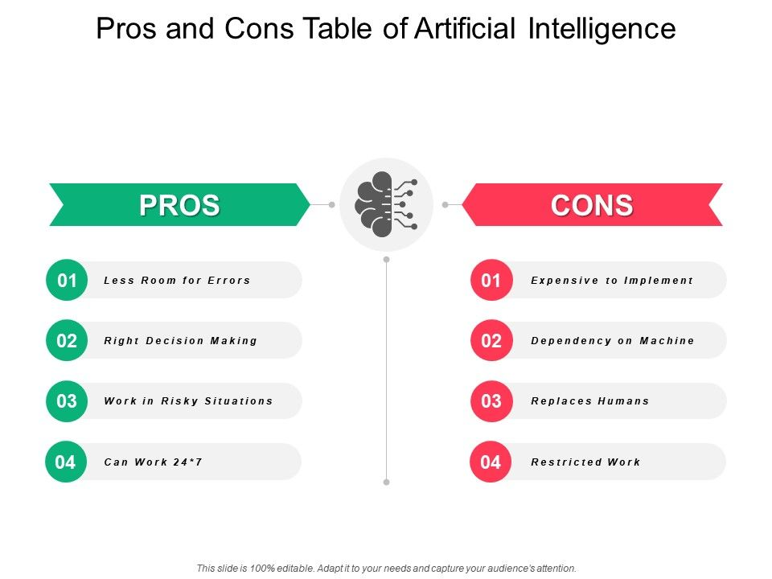

home
what is AI
pros&cons
applications
how to learn
home
what is AI
pros&cons
applications
how to learn
1. To ‘err’ is human, so why not use AI? Machine take decision based on previous data records. With algorithms, the chances of errors are reduced. This is an achievement, as solving complex problems require difficult calculation that can be done without any error. Business organizations use digital assistants to interact with their users, this helps them to save an ample amount of time. The demand for user’s businesses is fulfilled and thus they don’t have to wait. They are programmed to give the best possible assistance to a user. For example – Heard of Mars Orbiter Mission, or the movie Mission Mangal, which is based on it? How are they reaching to such great heights? The first reason being the human brain and the second being artificial intelligence. There is no room for error with artificial intelligence. The robots are fed with information that is sent to explore space. Metal bodies have more resistant and a great ability to endure the space and hostile atmosphere. They are created and used in such a way that they cannot be modified or get disfigured or breakdown in a hostile environment.
2. AI doesn’t get tired and wear out easily Artificial Intelligence and the science of robotics is used in mining and other fuel exploration processes. These complex machines help to explore the ocean floor and overcome human limitations. Due to the programming of the robots, they can perform a more laborious task with extra hard work and with greater responsibility. Moreover, they do not wear out easily.
3. Digital assistance helps in day to day chores Siri listens to us and performs the task in one tap. GPS helps you to travel the world. How can I forget the basic necessity? Food, clothing, shelter, and smartphone. They are the ones that predict what we are going to type, in short, they know us better than anyone. The best is the autocorrect feature, it understands what you are trying to say and present you the sentence in the best way possible. Have you observed that while you post a picture on social media, you tag people, but the machine automatically detects the person’s face and tags that individuals? Same is when you work on Google Photos. Automatically, a folder is created of the people with the help of their faces. Artificial Intelligence is widely employed by financial institutions and banking institutions because it helps to organize and manage data. Also, detection of fraud uses artificial intelligence in a smart card-based system.
4. Rational decision maker Logic above all! Highly advanced organizations have digital assistants which help them to interact with the users and save the need for human resources. Right program decisions can be taken if they are worked upon rationally. But, with humans, emotions come along. When artificial thinkers, there is no distraction at all. They don’t have an emotional side, and that makes robots think logically. Emotions are not associated with them and therefore the mood doesn’t hamper the efficiency. Thus they are always productive.
5. Repetitive jobs The same old task, a task that doesn’t add value is of no use. Also, repetitive jobs are monotonous in nature and can be carried out with the help of machine intelligence. Machines think faster than humans and can perform various functions at the same time. It can be employed to carry out dangerous tasks and its parameters are adjusted. This is not possible with humans as their speed and time can’t be calculated on the basis of parameters.
6. Medical applications This is the best thing that artificial intelligence has done to humans. It’s said that time and tide waits for none but, with medical applications of artificial intelligence, a wide scope application is present. Doctors assess patients and their health risks with the help of artificial machine intelligence. The applications help to educate the machine about the side effects of various medicines. Nowadays, medical professionals are trained with artificial surgery simulators. It uses application which helps in detecting and monitoring neurological disorders and stimulate the brain functions. This also helps in the radiosurgery. Radiosurgery is used in operating tumors and help in the operation without damaging the surrounding tissues.
1. High cost It’s true that AI comes with a high cost, but there is no such thing as a free lunch too. It requires huge costs as it is a complex machine. Apart from the installation cost, its repair and maintenance also require huge costs. The software programs need frequent upgradation and cater to the needs of the changing environment. Also, if there is a breakdown, the cost of procurement is very high. With that, recovery requires huge time too.
2. No human replication No matter how smart a machine becomes, it can never replicate a human. Machines are rational but, very inhuman as they don’t possess emotions and moral values. They don’t know what is ethical and what’s legal and because of this, don’t have their own judgment making skills. They do what they are told to do and therefore the judgment of right or wrong is nil for them. If they encounter a situation that is unfamiliar to them then they perform incorrectly or else break down in such situations.
3. No improvement with Experience Artificial intelligence cannot be improved with experience, they can perform the same function again if no different command is given to them. With time, it can lead to wear and tear. It stores a lot of data but the way it can be accessed and used is very different from human intelligence. Also, they can’t cope up with the dynamic environment and so they are unable to alter their responses to changing environments. We are constantly bombarded by the question of whether it is really exciting to replace humans with machines. Artificial intelligence doesn’t have feelings and because of which there is nothing like working with a whole heart or with full passion for them. There is no sense of belonging or togetherness or a human touch. They fail to distinguish between a hardworking individual and an inefficient individual.